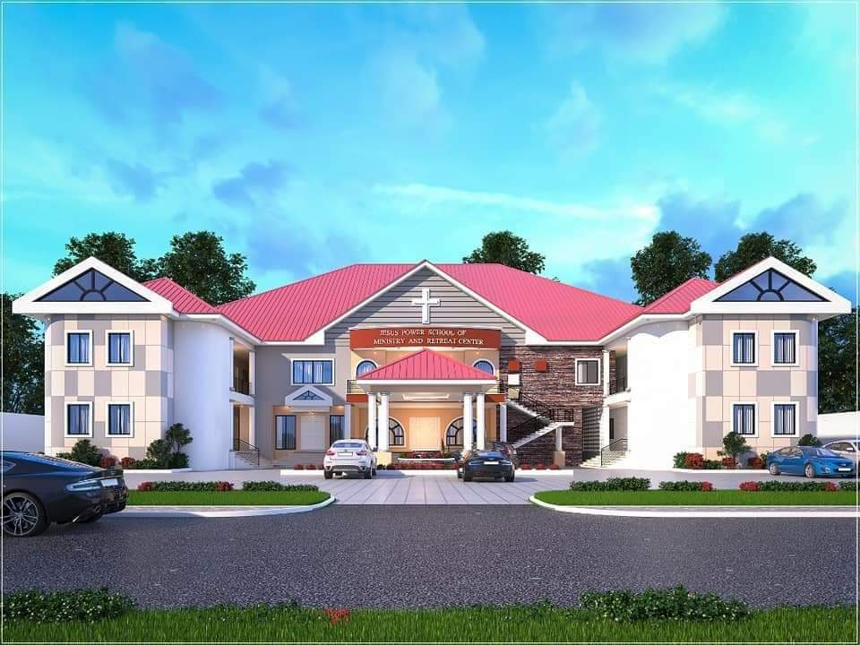

Faith
Grounded in the Word of God and a life of prayer.
The story, vision and leadership behind Jesus Power School of Ministry and Retreat Center at Grace Centre, Dawhenya.

Jesus Power School of Ministry and Retreat Center (Grace Centre) is a ministry of JPower Coldwater Foundation, founded by Apostle Bismark Osei Akomeah, a Ghanaian-American minister based in Columbus, Ohio, USA.
The vision was born from a spiritual encounter during a visit to the cave of Engedi in Israel, where the biblical account of David sparing Saul's life stirred a desire to create a place where God could train and empower those called to ministry — especially the less privileged.
Inaugurated on 24 April 2024 by Rev. Dr. Stephen Wengam, General Superintendent of Assemblies of God Ghana, the US$1.8 million facility is located at Abbey Korpe (Abbeykope), Dawhenya, near Tema in the Greater Accra Region.
The centre has 20 dormitory rooms and 15 executive rooms accommodating up to 300 guests, a 1,200-seater auditorium, a 3,000+ book library, eight 50-seater meeting rooms, a prayer garden, sanctuary, cafeteria and lecture halls.
We are affiliated with Global University USA, offering Practical Ministry and Leadership programmes that combine academic rigour with hands-on ministry experience. Our name — Jesus Power — reflects our belief in the transformative power of Christ to change lives, raise leaders and advance God's Kingdom.
Six commitments that shape how we train, host and serve.
Grounded in the Word of God and a life of prayer.
High standards in ministry training and hospitality.
Equipping servants to impact their communities.
Life-changing encounters with God's power.
Raising champions for the global harvest.
A family of believers growing together.
The inauguration and vision have been covered by major Ghanaian media outlets.
"The $1.8 million Jesus Power School of Ministry Retreat Centre is the brainchild of Apostle Bismark Osei Akomeah, Founder of the church, based in Columbus, Ohio, USA, which is a component of his Coldwater Humanitarian Foundation."
The facility was inaugurated by Rev. Dr. Stephen Wengam, General Superintendent of Assemblies of God Ghana, who commissioned the centre at Abbeykope in Dawhenya.
"A new multi-purpose Christian retreat centre in Accra has been inaugurated by the Rev. Dr Stephen Wengam, General Superintendent of the Assemblies of God, Ghana."
Notable men of God who graced the occasion included Dr. Michael Boadi Nyamekye of Makers Chapel, Prophet Nanasei Opoku Sarkodie of Potter's City Ministries, and Prophet Dada Jones of the Holy Ghost Revival Ministry in the UK.
"Bishop James Saah, senior Bishop of Action Chapel International, encouraged Christian groups and churches to patronise the facility which provides serene and conducive ambience for church retreats, weddings and all other residential activities."
"The visionary behind this transformative project is Apostle Bismark Osei Akomeah, founder of the Jesus Power Assembly of God Church and Jesus Power Coldwater Foundation."
Other distinguished guests included Bishop Emeritus James Saah of Action Chapel, Rev. Dr. Kwadwo Boateng, Senior Pastor of Holy Hill Chapel Assemblies of God, Rev. Tito Adjei, Assistant General Superintendent of Assemblies of God Ghana, and Dr. Jones Boateng of Deliverance Outreach Ministry.
The vision and purpose of the JPower Coldwater Foundation and Grace Centre Retreat Center.
The urge to establish and operate the JPower Coldwater Foundation comes from a unique story — well documented in the book "Product of Grace" — which chronicles a long and laborious walk from rejection, hopelessness and obscurity, without any requisite formal education, into the wonderful service of Jehovah God. The ideals of the Foundation draw strength and ground themselves in Scripture found in Colossians 1:25–29.
The JPower Coldwater Foundation's fundamental purpose shall be:
The governing board guiding the JPower Coldwater Foundation and its ministries.
The JPower Coldwater Foundation is governed by a Board of Directors, consisting of not more than twelve (12) members, who oversee the affairs of the Foundation and ensure its mission is faithfully executed.
Founder & CEO · President and Director of Operations
Serves as the Chief Executive Officer of the Foundation in perpetuity. Founder of the Jesus Power School of Ministry and Retreat Center (Grace Centre) in Dawhenya, Ghana.
The number of Directors may be increased or decreased by a duly adopted amendment to the bylaws of the Foundation. The Board is committed to upholding the vision, mission and values of the Foundation as it serves communities in Ghana and beyond.